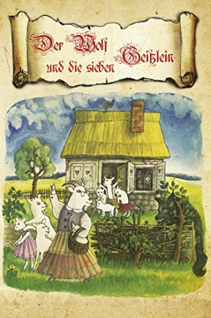

#10329 Der Wolf und die 7 jungen Geißlein
Alternativ: Der Wolf und die sieben Geißlein (Englischer Titel)
 
 IMDB-Wertung: 6.5 / 10
IMDB-Wertung: 6.5 / 10  Metascore: 0
Metascore: 0 
Mother Goat and her seven children live in a tree in the woods. At school the kids are warned by their teacher to beware of the "big bad wolf", who loves to eat little goats. One day when their mother leaves the tree to do some errands, the wolf shows up, sees seven tasty little morsels up in the tree and sets out to use every trick he knows he make them his next meal.
Jahr: 1957
Dauer: 54 Minuten
FSK: 6
Land: West-Deutschland Studio: Jugendfilm-VerleihTonspuren:
Untertitel:
Auflösung: 720p (960x712) Größe: 1884 MB
Genre: Fantasy, Animation/Trick, Familie
Regisseur: Peter Podehl
Drehbuch: Jacob Grimm, Wilhelm Grimm, Konrad Lustig
Soundtrack: Fred Sporer
Darsteller:
 Johannes Buzalski als Krämer
Johannes Buzalski als Krämer- Helmo Kindermann als Wolf
- Harriet Geßner als Geißenmutter
- Jürgen von Alten als Müller
- Gusstav Oehler als
- Otto von Frisch als Lehrer
- K.H. Millisterfer als
- Christa Welzmüller als
- Uschi Görthofer als
- Dagmar Wolf als
- Hansi Maar als
- Alexander Moch als
- Gaby Lang als
- Toni Mang als
- Gustav Oehler als Bäcker
Datei: X:\Märchen\Wolf und die 7 jungen Geißlein, Der (1957, FSK6, 960x712).mkv seit 29.12.2018
Festplatte: Kinder-Filme+Trick
 Es gibt insgesamt 61 Filme in der Gruppe 'Märchen'
Es gibt insgesamt 61 Filme in der Gruppe 'Märchen'